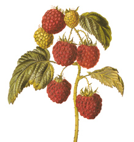
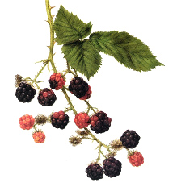
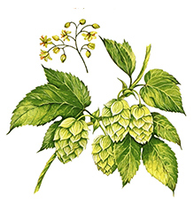

welcome to our farm
We are a ten-acre, diversified farm in scenic Vermilion County, Illinois. We grow a variety of perennials and annuals that are perfectly suited to our woodland-prairie soil. Experience has taught us to employ a simple and natural approach to growing food. Our production methods are dictated by a lack of connection to electric utilities and a dependence on our private well. We enjoy the challenges these limitations impose, and relish the endless creative freedoms they necesitate. Our goal is to provide quality produce to the East-Central Illinois region while living amongst the plants and animals we love. Thank you for your support!
what's in season

Late August to September
Raspberries

Late June to July
Blackberries
